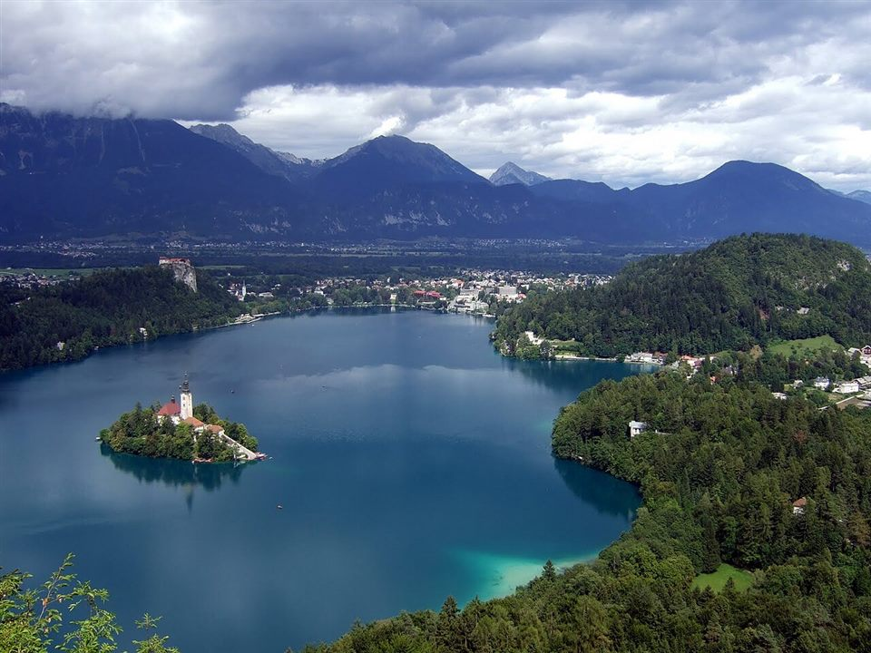
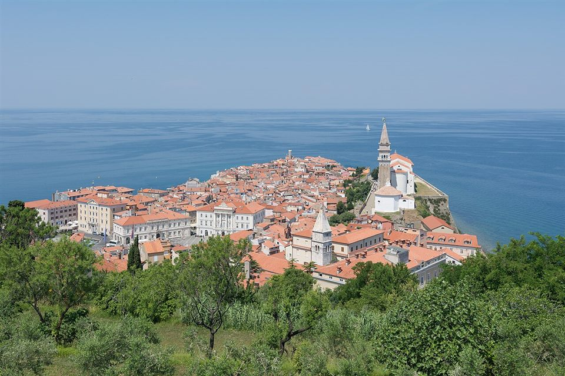
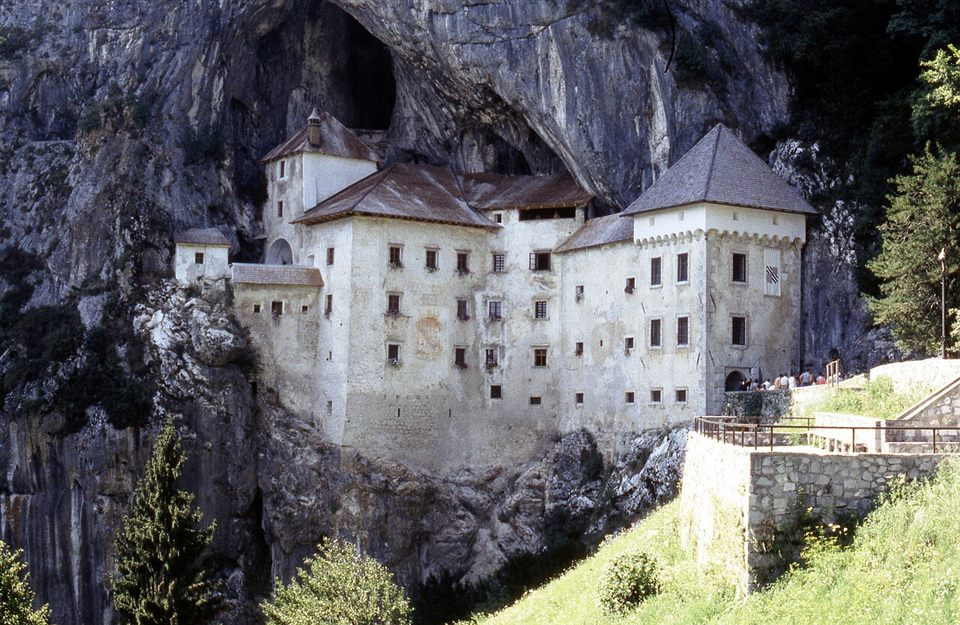

Slovenia슬로베니아 Slovenija
알프스와 아드리아해, 카르스트 동굴과 첨단 제조업의 만남
- Capital
- 류블랴나 (Ljubljana)
- Language
- 슬로베니아어
- Currency
- 유로 (EUR)

블레드 호수Lake Bled 소차강 계곡Soča River valley
소차강 계곡Soča River valley

피란 구시가지Piran Old Town
프레드야마 성Predjama CastleExplore Slovenia
슬로베니아 더 알아보기
슬로베니아에서는 류블랴나의 강변과 블레드 호수를 지나 소차강의 에메랄드빛 협곡과 피란의 아드리아해 해안까지 짧은 거리에서 만난다. 알프스·지중해·판노니아의 문화가 겹치는 나라다.